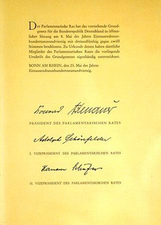

Honorer la mémoire de ceux qui sont morts en France comme en Allemagne est un devoir. Entretenir, valoriser les lieux de mémoire est aussi la moindre des dettes que nous devons avoir à l'égard de tous ceux qui ont versé leur sang pour leur patrie. Témoigner est, surtout envers les jeunes générations, de toutes provenances, qui ne mesurent pas toujours le privilège qui est le leur, de vivre dans des pays pacifiés, démocratiques et dont les valeurs fondatrices sont celles qu'illustrent si bien les trois mots frappés aux frontons de nos édifices publics, fondements nécessaires à une société de tolérance et d'harmonie. Ces principes sont ceux qui m’ont conduit à m’investir dans la mise en place du Musée militaire franco-allemand de Mayence.
L’association de ces deux termes, musée militaire et franco-allemand aura pu surprendre certains, tant on peut les imaginer incompatibles. La mémoire, c'est le respect de tous, pour les actes de bravoure et de courage de millions de femmes et d'hommes de part et d’autre du Rhin qui, au cours des conflits marquant le siècle dernier, se sont engagés, sans états d'âme, dans la défense de leur pays et dans leur refus de l'asservissement par d'autres. C'est aussi le respect des autres. Lorsque l'on se rend dans un pays étranger ou que l'on part à la découverte de son propre pays, on se doit de respecter les traditions de nos hôtes, d'aller à la rencontre de leur mode de vie, de leur culture et de leurs idées. Il n'y a donc pas d'antinomie entre ces deux termes et l'on peut, à juste titre, parler de mémoire partagée.
Promouvoir l’amitié franco-allemande puisque c'est l'objet de ce Musée c’est permettre aux visiteurs de mieux encore découvrir les sites qui témoignent de la richesse, et de l'authenticité, parfois cruelle, de notre patrimoine historique commun. C’est leur permettre, comme ce sera encore le cas à l'occasion des cérémonies du 100ème anniversaire de l’Armistice, de se souvenir des lieux où eux-mêmes ou leurs familles, ont payé un lourd tribut. C’est, enfin, favoriser la transmission vers les jeunes générations, qui doivent savoir que la France et l’Allemagne, deux magnifiques pays sont deux nations qui œuvrent depuis des décennies à la construction européenne mais aussi le théâtre de conflits qui ont vus d'autres jeunes gens se sacrifier pour la libération de leur pays et d’autre sous de faux idéaux.
Il s'agit donc de favoriser la lisibilité de notre histoire commune en améliorant l'information relative à leur existence, comme c'est l'objet de ce projet, mais surtout de faire en sorte que l'amateur d'histoire, qui vient dans la région pour découvrir la ville où se sont trouvés Napoléon, le Général de Gaulle, le maréchal Koenig, et bien d’autres héros par exemple, soit en mesure de savoir que dans un périmètre de quelques kilomètres, d'autres témoignages de notre passé historique commun méritent d'être visités, tels que le mémorial de Marceau ou les carrés militaires de Trèves. Les responsables politiques et institutionnelles doivent accompagner ces projets en direction de nos jeunes générations pour leur offrir aussi l'opportunité de découvrir, en marge des sites mémoires, les autres richesses touristiques de la région et donner envie de rester plus longtemps en Allemagne.
Ce musée est un témoignage. Celui de la volonté de citoyens français et allemands de mettre en valeur notre devoir de mémoire partagé mais tout particulièrement de favoriser l'accès de tous à cette formidable source d'information et de réflexion que sont les sites de mémoire, de contribuer à ce devoir de mémoire qui nous échoit à tous.
1945 - Entrée des troupes françaises à Mayence
A la fin de la seconde Guerre Mondiale, les relations entre la France et l'Allemagne étaient marquées par des conflits politiques et de pouvoir qui avaient atteint leur apogée au cours de trois grandes guerres entre les deux nations. Les victoires succédaient aux défaites, les humiliations aux revanches. Une réputation d'ennemis s'était formée qui avait empoisonné les relations bilatérales pendant des générations bien qu'entre-temps des efforts avaient été faits pour apprendre à se connaître et à se comprendre. Cependant, les nazis avaient poussé l'image de l'ennemi héréditaire à l'extrême. En France, les souvenirs de la campagne de 1940, des quatre ans d'occupation avec les déportations dans des camps de travail allemands et de la terreur que faisaient régner les SS et la Gestapo étaient encore vivaces. Maintenant les Français arrivaient en vainqueurs. Qu'allait-il se produire? Le 10 juillet 1945 les éléments du 2ème corps d’armée relevaient les troupes américaines et occupaient la zone Nord disposant de la 1ère Division d’Infanterie, la 3ème Division d’Infanterie Algérienne, et la 10ème Division d’Infanterie auxquelles s’ajoutaient peu après la 3ème Division Blindée, la 5ème Division Blindée et la 23ème Division d’Infanterie. Dans le cadre de la démobilisation et de la réorganisation des armées le 2ème Corps d’Armée est dissous le 30 mai 1946.
Mayence-Heure zéro
A partir de 1946, on comptait en dehors des habitants allemands plusieurs milliers de Français dans la ville. Mayence était le siège de diverses unités militaires de la zone nord. Les services français étaient installés pour la majorité dans les hôtels, les bâtiments publics et les maisons particulières. Un bureau des fournitures situé à la mairie tentait, après de premières réquisitions désorganisées, de régler la mise à disposition des logements privés. En règle générale, le gouvernement émettait alors un bon de réquisition pour une durée indéterminée. L'administration municipale devait organiser l'évacuation des locaux dans un délai de 24 heures en général. Toute personne devant libérer intégralement un logement ou une maison ne devait emporter que ses affaires personnelles. De nombreux Mayençais furent à l'étroit dans les années qui suivirent, certains même furent logés en partie dans des greniers ou des caves. De plus, le mobilier, la literie, les couverts et autres objets nécessaires à la vie quotidienne, furent confisqués. Celui qui ne s'était pas fait établir un bon de réquisition, ne pouvait prétendre à des dommages et intérêts ultérieurs. Communication, réussirent à obtenir un compromis du quartier général français. A partir de mars 1946, l'administration municipale commença à verser les indemnisations pour les logements et le mobilier réquisitionnés. Les propriétaires de logement perçurent un loyer pour les locaux et une quote-part pour l'usure du mobilier. La situation en logement se détendit au début des années 50 avec la restitution de la majorité des bâtiments dans le centre-ville. L’approvisionnement en denrées alimentaires déjà difficile dans les derniers mois de guerre continua à s'aggraver avec le doublement du nombre des habitants. On conserva néanmoins les rationnements, mais les tickets ne valaient pas le papier sur lequel ils étaient imprimés. La situation alimentaire dans l'ensemble de la zone.
L’administration
Entre mai et juillet 1945, l'administration militaire de la zone française était placée sous les ordres du Général De Lattre de Tassigny, commandant en chef de la 1ère Armée, résidant à Lindau. Le 14 juillet, le Général Pierre Koenig devint commandant en chef français en Allemagne. II lui incombait de mettre en place une administration militaire « civile ». Mayence devint le siège d’états-majors militaires. L'un des adjoints du Général Koenig était le Général Emil Laffon, directeur du gouvernement militaire de la zone française d'occupation (G.M.Z.F.0.). Entre 1945 et 1947, deux institutions administratives se trouvaient face à face à Baden-Baden, le cabinet civil du Général Koenig et le G.M.Z.F.O. qui remplissaient les mêmes missions, mais représentaient néanmoins des directions politiques différentes. Alors que le Général Laffon voulait donner de nouveau plus de responsabilité aux autorités allemandes, le Général Koenig représentait une ligne directive. Dans les cinq gouvernements militaires de la zone nord de la zone d’occupation, Laffon se faisait représenter par des gouverneurs ayant une très grande autonomie de décision. La zone nord se répartissait en trois gouvernements militaires comprenant : la Rhénanie Hesse Nassau, la Hesse Palatinat et la Sarre. Les responsabilités furent respectivement occupées par Claude Hettier de Boislambert et le juriste André Brozen Favereau. Les services Français ont été complétés par plusieurs services civils et militaires : les délégations de cercle au niveau communal, l'enseignement français en Allemagne, la Paierie générale de France en Allemagne, le tribunal militaire et des économats. Des contacts entre les forces stationnées ici et la population ont eu lieu sous différentes formes. A la création de la République fédérale d'Allemagne et l'entrée en vigueur du statut d'occupation en 1949, le gouvernement militaire français fut dissous à Baden-Baden. La haute commission alliée assumait alors les fonctions en tant qu'organe de contrôle des puissances occidentales, représentée chacune par un haut-commissaire. L'entrée en vigueur des accords de Paris en 1955 mit fin au statut d'occupation - à l'exception de Berlin, la République fédérale d'Allemagne fut laissée à son indépendance. Les forces alliées devinrent des forces étrangères stationnées dans un pays allié et souverain. Les troupes d'occupation en Allemagne devinrent les Forces Françaises en Allemagne, dont le quartier général resta à Baden-Baden jusqu’en 1999.
La justice durant la période d’occupation
La capitulation du troisième Reich avait pour conséquence que les alliées ordonnèrent une série de Lois maritales qui furent publiées en zone Française par à compter du 28 mai 1945. La loi N°1 supprima toutes les Lois national socialistes, avec la Loi N°2 tous les tribunaux allemands furent momentanément fermés. Les actes malveillants des Mayençais à l’encontre des directives des forces d’occupation étaient du ressort du tribunal sommaire. Les noms des condamnés furent affichés jusqu’en février 1946 en précisant l’acte incriminée et la hauteur de la peine. L'administration militaire française ne tarda pas à mettre en place une administration judiciaire autonome. Le tribunal d'instance retrouva ses locaux. Le tribunal d'instance de Mayence reprit son activité quelques mois plus tard, de premiers procès civils eurent lieu. Le tribunal allemand devait effectuer un compte rendu hebdomadaire auprès du juge militaire français. Le tribunal sommaire quant à lui traitait toujours les infractions concernant les forces de stationnement françaises. Jusqu'au milieu des années cinquante, les autorités judiciaires françaises pouvaient décider de se charger de n'importe quelle procédure par le biais de « l'évocation ». Mais, elles utilisèrent très peu ce droit.
La vie culturelle
La politique culturelle était pour la France un des instruments les plus importants pour que l'Allemagne prenne un nouveau départ démocratique. Elle devait offrir des perspectives et contribuer à rapprocher les populations jadis ennemies. La soif des Allemands pour les évènements culturels (surtout étrangers) était grande car les maîtres du « IIIème Reich » avaient fortement réduit l'offre culturelle et coupé totalement les Allemands du patrimoine et des événements culturels du monde occidental. Le Général Raymond Schmittlein était responsable de la vie culturelle dans toute la zone française d'occupation. Il devait être donné à la vie culturelle allemande une nouvelle tendance par des impulsions venant de France, ce qui eut pour effet de souligner le prestige culturel de la France. Des expositions itinérantes, des artistes d'opéra et d'opérette, des artistes de cabaret de tout ordre, se passèrent bientôt entièrement le relais. L'offre culturelle permit à de nombreux Mayençais de s'évader, pendant quelques heures, de leur souci quotidien de survie.
1946 - Création du Land de Rhénanie Palatinat
Un an après avoir investi et occupé leur zone d’occupation française la directive N°57 créa le Land de Rhénanie Palatinat. Ce fut le chemin pour préparer la mise en place d’un Etat légal. C’est ainsi que la directive N° 57 est considérée comme l’acte de naissance de la Rhénanie palatinat. Elle fut entièrement préparée par les services français. Les politiciens Allemands n’eurent aucune influence que ce soit dans l’élaboration du texte ou quant à sa formulation. Ce nouveau Land devint un enfant de l’occupation, il en était de même pour le nom du Land qui fut choisi par le général Koenig dans l’énoncé de sa déclaration qui parla d’un « Land rhénan palatin ». C‘est donc sans émotion particulière et avec beaucoup de retenue que les habitants prirent connaissance de la création du Land. Une grande parade militaire eu lieu le 11 et 12 septembre 1946 rassemblant 5000 soldats sur le tarmac du terrain d’aviation de Finthen, des manifestations sportives ainsi qu’un défilé nocturne au flambeau. Par conséquent il était clair qu’à la tête de ce nouveau Land soit occupé par un français : Claude Hettier de Boislambert fut nommé quelque jours après la promulgation de la directive Gouverneur du Land.
1948 - Chemins vers un nouvel État
Après des années d'occupation par les forces alliées, la rédaction des « Documents de Francfort » permet à l'Allemagne de l'Ouest de passer du droit martial des Alliés à un droit strictement allemand. L'atmosphère dans les quartiers généraux américains est tendue lorsqu'en ce 1er juillet 1948, les premiers ministres des Länder de l'Ouest reçoivent des Puissances Alliées les « Documents de Francfort ». Ceux-ci doivent définir les fondements d'un. Le 1 er juillet 1948 marque une date importante dans la constitution de la République Fédérale nouvel État ouest-allemand. En effet, suite aux conséquences de la Guerre Froide, un fossé s'est creusé dès la fin des années 1940 entre l'URSS et les autres Alliés, les États-Unis, la Grande Bretagne et la France. Par conséquent, lors de la conférence des Six Puissances, qui eut lieu à Londres au printemps 1948, les Puissances de l'Ouest et les États du Benelux décidèrent de la création d'un État ouest-allemand, dont les fondements se trouvaient dans les «Documents de Francfort». Ces « documents » soulignent la nécessité de convoquer une assemblée nationale, condition préalable à l'élaboration d'une constitution démocratique, ainsi que la nécessité de mettre en place un système fédéral. Ainsi les documents de Francfort fondant la nouvelle démocratie allemande comportaient-ils trois parties. La première, prévoit la future révision de la division allemande, la protection des droits des Lander de l'Ouest ainsi associés, la création d'une instance centrale appropriée ainsi que la garantie des droits et libertés individuels. La seconde partie est l'occasion pour les puissances Alliées de l'Ouest d'exiger une réorganisation des Länder. Enfin, la troisième partie, censée clarifier la question de la souveraineté en Allemagne de l'Ouest, impose aux premiers ministres d'accepter l'état d'occupation de l'Allemagne. Inquiets quant à l'avenir de l'Allemagne, les chefs des Länder réagissent avec circonspection. S'ils saluent la souveraineté promise, ils craignent néanmoins une irrévocabilité de la frontière entre des deux Allemagnes. Finalement, après de longues et âpres discussions, les ministres présidents acceptent les exigences des occupants. Ils refusent toutefois de constituer une Assemblée Nationale nécessaire à l'élaboration d'une nouvelle constitution et chargent seulement un Conseil Parlementaire de cette tâche. Après avoir été approuvée par les gouverneurs généraux, la nouvelle constitution est proclamée le 23 mars 1949. Dès lors commence pour la jeune République Fédérale la recherche de son identité. La question du nouveau drapeau fédéral allemand fait partie de cette quête d'identité. Après diverses propositions, le drapeau datant de l'époque de la République de Weimar est choisi. Les couleurs Noir, Rouge, Jaune flottant alors sur les immeubles officiels marquent le changement en Allemagne de l'Ouest. Le nouveau Parlement de Konrad Adenauer choisit en 1951 Bonn comme capitale ouest-allemande, rejetant d'une courte majorité la candidature de Francfort-sur-le-Main. Par ailleurs, l'Hymne Nationale ne faisant pas l'unanimité, Adenauer décide alors d'utiliser la troisième strophe de la « Lied der Deutsche » de Hoffmann von Fallersleben et Joseph Haydn. Celle-ci ne sera chantée que lors de manifestations officielles. Cette décision fut ratifiée définitivement en 1992 après la réunification. Ainsi se sont façonnés les débuts de la République Fédérale d'Allemagne, marqués par les doutes des Alliés et des Allemands. Au cours du temps, la situation a évolué vers une coopération politique et économique fructueuse qui mena l'Allemagne à sa maturité démocratique. Ainsi les « Documents de Francfort » sont-ils à marquer d'une pierre blanche dans l'Histoire de l'Allemagne, de l'Europe et de l'Occident.
Réconciliation - Du Traité de l’Elysée à la Brigade Franco-Allemande
Le traité de 1963 relatif à la coopération franco-allemande intensifia également la coopération des armées des deux pays. Il s'ensuivit des manifestations sportives communes, des jumelages, un échange régulier entre les compagnies et des exercices communs. En 1986, une grande unité française, la 1ère Division Blindée, participa pour la première fois à une manœuvre allemande. Une restructuration profonde des forces françaises en Allemagne eut lieu depuis 1991 après la réunification de l'Allemagne. Le 2ème Corps d Armée, dont l'état-major se trouvait à Baden-Baden, placé sous l'autorité du commandant en chef des forces françaises en Allemagne, fut dissous en 1993. Les forces françaises en Allemagne (F.F.A.) devinrent les forces françaises stationnées en Allemagne (F.F.S.A.). Dans la même année, l'état-major de la 1ère Division Blindée fut transféré de Landau à Baden-Baden, où il fusionna avec l'état-major des FFSA. En 1999, l'état-major des FFSA-1ère DB et le 5° Régiment de commandement et de soutien seront dissous. Sont restées en mémoire en particulier, les interventions de soutien des forces françaises lors des catastrophes naturelles. Aujourd’hui ne subsistent plus que la BFA comme garant de la coopération militaire bilatérale sur le sol allemand.
Partager cette page